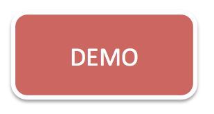
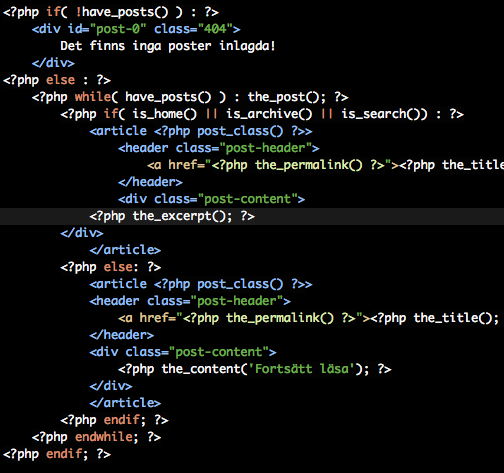
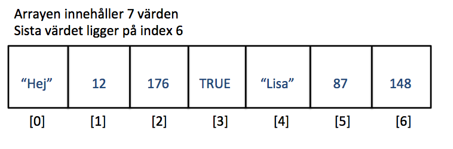
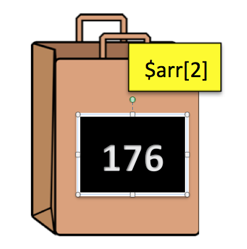
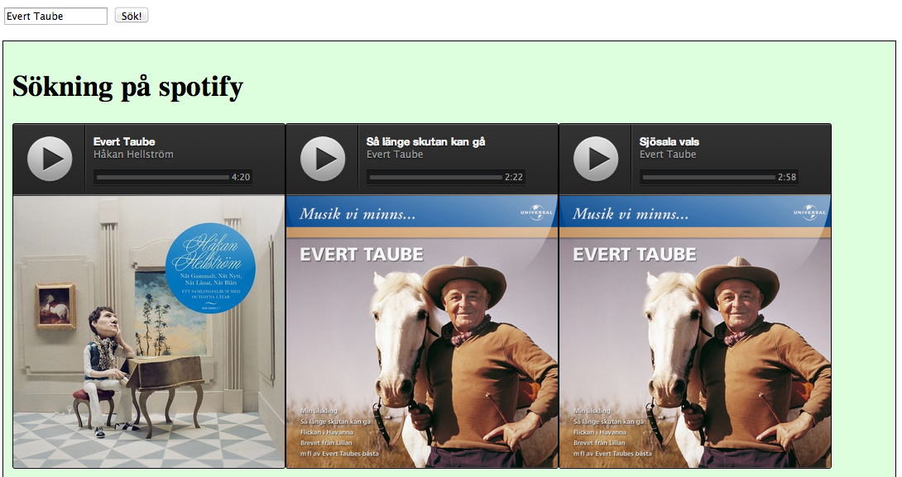
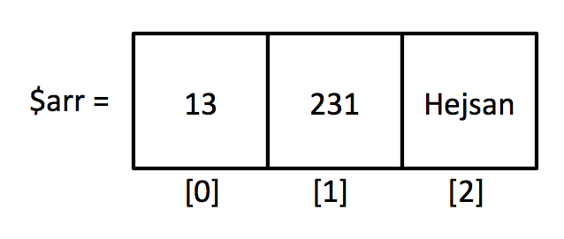
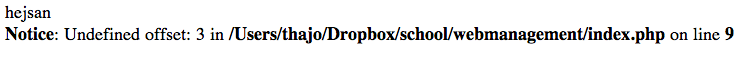
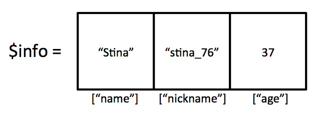

Web Management, 1IK424
Linnéuniversitetet, VT2013
PHP Part II
Vad skrivs ut?
$has_posts = true;
$nr_of_posts = 5;
$show_comments = true;
$is_single = true;
$show_posts = true;
if($has_posts && $show_posts) {
if($is_single && !$show_comments) {
echo "Show information in single page";
}
elseif($nr_of_posts > 10 || $show_comments) {
echo "Showing information in many pages";
}
else {
echo "Show nothing";
}
}
Vi fortsätter
Problem. Vi har skrivit kod för att kolla om användaren tryckt på knappen.
Vi vill validera...d.v.s. kolla om användaren har skrivit något formulären.

Iteration - om och om och om igen
- T.ex. skapa en tabell med 10 rader och 5 kolumner
- T.ex. skriva ut alla produktnamn
- T.ex. göra någonting till ett visst tillstånd uppnås
- for-loop
- while-loop
- foreach-loop
Vanligast är for-loopen
for-loopen har man till att upprepa kod ett visst antal gånger
Vi vill skriva ut "Hello World!" 10 ggr
// for-loop
// loopen körs lika många gånger
// 1. Vi skapar en variabel $i och sätter den till 0
// 2. Vi skapar ett vilkor (så läng $i är mindre än 3)
// 3. För varje gång loopen går öka $i med 1
for($i = 0; $i < 3; $i++) {
echo("Hello World!");
}
while-loop
while-loopen är en enklare variant av loop.
Du kommer stöta på den när vi börjar jobba med wordpress
Så länge något är sant görs koden innanför while-loopen
$counter = 5;
while($counter > 0) {
echo $counter;
$counter = $counter - 1;
}
$counter = 5;
while($counter > 0) {
echo $counter;
$counter--;
}
DEMO
Olika typer av loopar
Skapa en varaibel som ges ett numeriskt värde.
Skriv ut "Hello world" lika många gånger
Gör samma sak med en whileloop
Exempel på whilelopp i wordpress
Som ser lite annorlunda ut

DEMO
Olika sätt att skriva samma kod!
Att spara en keno-rad
$nr1 = 4;
$nr2 = 14;
$nr3 = 3;
$nr4 = 44;
...
$nr20 = 54
Vi behöver något som kan spara en samling med variabler, en lista
Array
- En variabel kan spara ett värde, en array innehåller en lista med flera variabler/värden
- En lista med nummer, En lista med alla blogginlägg, en lista med inmatade meddelanden...
- Du kan spara olika typer av värden i en array - i PHP
$arr = array("Hej", 12, 176, True, "Lisa", 87, 148);


När förekommer arrayer och vad behöver man kunna göra med dem?
- Arrayer är listor
- Oftast vet man inte hur många element (värden) listan har
-
- Antal blogposter, antal kommentarer e.c.t.
- Antalsökresultat

Array - skapa en array i PHP
$array = array(); // skapa en tom array
$array[0] = 13;
$array[1] = 231;
$array[2] = "Hejsan";

echo $array[2];
echo $array[3]; // ???

Att skriva ut en array
Säg att vi har en array/lista med värden.
Hur kan jag skriva ut dessa i min HTML-kod?
$array = array(1, 4, 23, 43, 23, 78);
echo $array[0] ."<br />";
echo $array[1] ."<br />";
echo $array[2] ."<br />"; // o.s.v.

Att skriva ut en array, utan att veta hur stor den är...
Att göra något flera ggr...hmmm...loop?
// for-loop
$array = array(1, 4, 23, 43, 23, 78);
// Hur många element/lådor finns det i arrayen
$nr_of_elements = count($array);
// loopen körs lika många gånger
for($i = 0; $i < $nr_of_elements; $i++) {
$current_value = $array[$i];
echo($current_value ."<br />");
}
Att fylla en dropdownlist med värden från
en array.
Gör ett demo där man har en array och som fyller en
dropdownlist
Itterationer - foreach-loop
Ett annat (snyggare?) sätt är att använda en foreach-loop
// for-loop
$array = array(1, 4, 23, 43, 23, 78);
foreach($array as $current_value) {
echo($current_value ."<br />");
}
Associativa arrayer
Istället för att hålla reda på index, numren,
kan man använda namngivning med textsträngar.
Key and value
$info = array();
$info["name"] = "Stina";
$info["nickname"] = "stina_76";
$info["age"] = 37;
echo $info["age"]; // skriver ut 37

var_dump($_POST);
echo $_POST["name"];
Slut för idag
 Detta verk är licensierat under en
Creative Commons Erkännande-IckeKommersiell-DelaLika 3.0 Unported Licens.
Detta verk är licensierat under en
Creative Commons Erkännande-IckeKommersiell-DelaLika 3.0 Unported Licens.